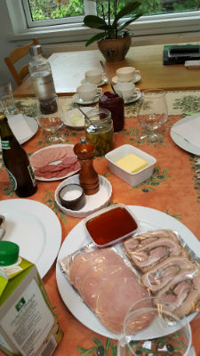

Mogens is a wonderful brother. I have great memories of our visits.
I knew I gained a great friend and brother when we first met in Mexico after a 50 year absence.
Kirsten knows how to make the dinner special.

Our talks about music, Povl Dissing and Ella Fitzgerald brought out the joy in music and verse.

Kirstin Bates, our older sister, died in 2015 at age 77 in Texas. Susanne Karlak, age 79, lives in Saratoga, CA.
"Since our father was an engineer, I know I had the brain to succeed"click for mexico picture here or click here surprize.

Smiles in Wonderful Copenhagen
Architecture and Art